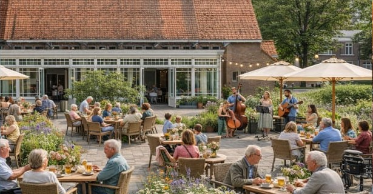
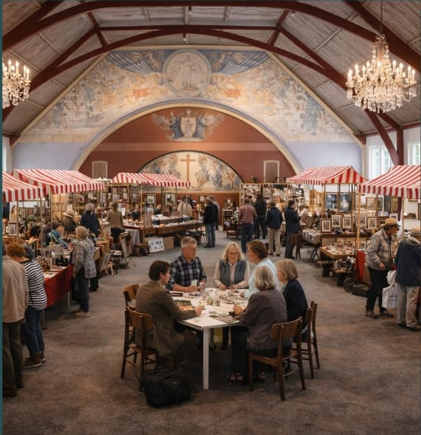
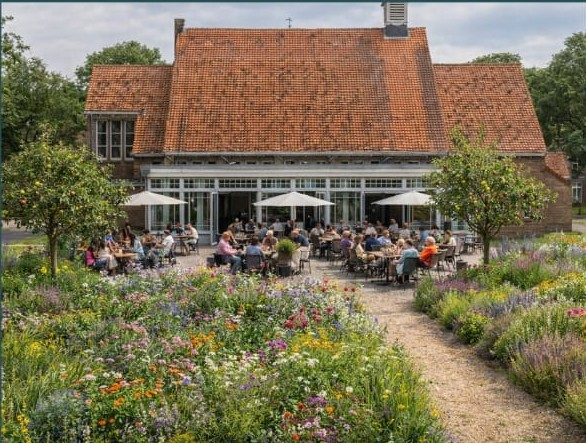

Ontmoeten
Koffie, lunch, gesprek en kleine activiteiten in een omgeving die uitnodigt om even te blijven.
In de serre van de kapel op Dekkerswald groeit het idee voor een huiskamercafé: een plek om binnen te lopen, aan te schuiven en elkaar vanzelfsprekend te ontmoeten.
Een plek waar je koffie drinkt, iemand tegenkomt, even blijft zitten en merkt dat Dekkerswald meer is dan een zorglocatie.
Onder de Boogen is bedoeld als ontmoetingsplek voor bewoners, familie, medewerkers, vrijwilligers, buurtgenoten en bezoekers van het terrein. De serre en kapel krijgen zo een dagelijkse functie: toegankelijk, gastvrij en herkenbaar.
Koffie, lunch, gesprek en kleine activiteiten in een omgeving die uitnodigt om even te blijven.
Ruimte voor vrijwilligers, dagbesteding, lokale makers en mensen die werkervaring willen opdoen.
Een schakel tussen zorg, wonen, natuur, cultuur en de buurt rondom Dekkerswald.
Dekkerswald heeft een eigen sfeer: groen, historisch en verbonden met zorg. Juist daarom past hier geen standaard horecaformule, maar een plek met rust, aandacht en gastvrijheid.
De aangrenzende kapel kan worden gebruikt voor kleinschalige bijeenkomsten, exposities, vieringen, herdenkingen en andere momenten die om een zorgvuldige omgeving vragen.
Tussen de kapel, de serre en het groen ontstaat een plek waar binnen en buiten in elkaar overlopen. De moestuin kan daarin een mooie rol krijgen: niet als decor, maar als bron voor ontmoeting, geur, smaak en verhalen.


Het programma hoeft niet ingewikkeld te zijn. Juist de herkenbare, dagelijkse dingen maken van Onder de Boogen een plek waar mensen graag terugkomen.
Als het kan, gebruiken we producten uit de moestuin op Dekkerswald en van aanbieders uit de omgeving. Denk aan soep met groenten van het seizoen, taart met fruit uit de buurt of kruiden uit eigen tuin. Zo krijgt de menukaart vanzelf iets lokaals en herkenbaars.
Onder de Boogen is aantrekkelijk als horeca-initiatief, maar de echte waarde zit in de combinatie van ontmoeting, participatie, erfgoed en buurtontwikkeling.
De kracht zit in de vanzelfsprekende ontmoeting. Bewoners, familie, medewerkers en bezoekers hoeven niet hetzelfde te komen doen om toch dezelfde plek te delen.
Onder de Boogen is nog in ontwikkeling. De komende periode worden ideeën, praktische mogelijkheden en verantwoordelijkheden verder verkend met mensen en organisaties die willen meedenken.

Het huiskamercafé kan alleen slagen als meerdere partijen hun kennis, netwerk en praktische mogelijkheden verbinden. De precieze rol van iedere partij moet nog worden besproken.
Denk aan partijen zoals ZZG Zorggroep, gemeente Berg en Dal, Werkenrode, HAN, ArtEZ, bewoners van Dekkerswald, Stichting Sint Michael en lokale ondernemers. Vermelding betekent nog geen formele samenwerking.
Het initiatief wordt gedragen door Maarten van Minderhout en Gunther Vranken, vanuit hun betrokkenheid bij Dekkerswald en de wens om van betekenis te zijn in de buurt.
Contactgegevens kunnen hier worden toegevoegd zodra het gewenste e-mailadres of telefoonnummer definitief is. Tot die tijd kan deze pagina worden gebruikt als rustige projectpagina voor gesprekken met bewoners, ZZG, gemeente en mogelijke partners.